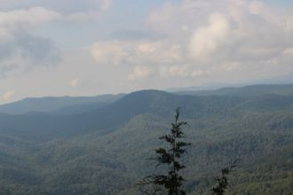
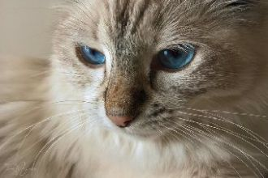
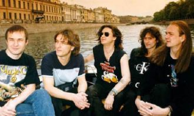

What we gonna do right here is go backWay back. Back into time
No baby no baby no babyNo, no, no
Sueño cuando era pequeño Sin preocupación en el corazón Sigo viendo aquel momento Se desvaneció, desapareció
Говорила, что меня не виделаОбнимала и тихо ненавиделаОбещала быть моей любимоюИ глазами хлопала невиннымиИ на все, на все мои признания
Чайковский – композитор и творец,Создатель лучших городских романсов,Симфоний, опер, музыкальных пьес,И «повелитель» скрипок, контрабасов.
Waiting for a lifetimeLike you're carved from the mountainSometimes I stand like a statueWaiting to surprise you
Я думала, ты придёшь, Хотела в твои глаза ещё посмотреть тепло. Опять между нами дождь, и десять шагов назад.Куда это привело?
Я под дождём,А в твоих окнах свет есть.Не подождешь,Ты избегал встреч.Горят в такси чьи-то портреты,Кто-то спросилНаши приметы.
Ooh ahh, I'm lost without your loveCan you hear me nowOoh ahh, I'm lost without your loveYour love..Your love..Your love..Ahhh

Я над землёй к небу лечу.Тебя рядом нет. Я к тебе хочу,Прикоснутся к твоей щекеИ вновь исчезнуть вдалеке.Радость - печаль, огонь и вода,
Осталось пять минут, мне пора уже идти.Курят и молчат мои друзья.Знаю, что поймут то, что ты должна прийтиНепременно проводить меня.
My love has got no moneyHe's got his strong beliefsMy love has got no powerHe's got his strong beliefsMy love has got no fame
I can't wait,For the weekend to begin,(I, I, I, I, I)
Desert loving in your eyes all the way.If I listen to your lies, Would you say I'm a man without conviction, I'm a man who doesn't know
Some people stand in the darknessAfraid to step into the lightSome people need to help somebodyWhen the edge of surrenders in site
Лодку большую прадед нашРешил построить для внуков,Строил всю жизнь,Но не достроил её тот прадед наш,Оставил нашему деду,
Больше трёх дней не спать - это уже любовь.Хочется танцевать, хочется быть с тобой,Всё наперёд узнать, видеть себя другой.

То ли рядом с шофёром, то ли в тесном купеЯ мотаюсь по жизни по великой стране.Позади километры оборванных струн,Впереди миражи неопознанных лун.
О, девушка, прекрасная как небо,Как утренняя летняя заря,Такой я не встречал нигде, где б не был,С тобой я знаю, что живу не зря.
У Настюши День рождение,Праздник празднует дитя.В годовщину в день варенья,Кумовья пришли, родня.Будь здоровая, Настюша,
Побеждают сильнейшие - так уж заведено.Мои пальцы замерзли от холода в ваших глазах.Я уже опустилась, наверно, на самое дно,